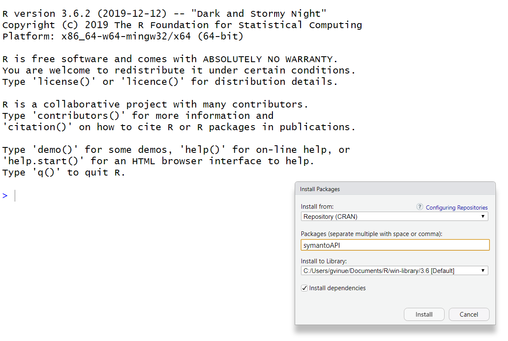

symantoAPI_intro.RmdThis document introduces the R package symantoAPI for text analytics by calling the Symanto API.
The following picture shows how the package can be installed from CRAN (The Comprehensive R Archive Network) on the user’s desktop, when the package is eventually submitted there.

Another alternative is to install the package from source:
install.packages("path_to_file/symantoAPI_1.0.tar.gz", repos = NULL, type = "source")Then, the package can be easily loaded in the R console.
Further information on package is available with these commands:
library(help = "symantoAPI")
packageVersion("symantoAPI")
help(package = "symantoAPI")The documentation files of the package, called vignettes in the R packages jargon, can be accessed with:
vignette(package = "symantoAPI")A particular vignette can be obtained with:
vignette("name_vignette", package = "symantoAPI")